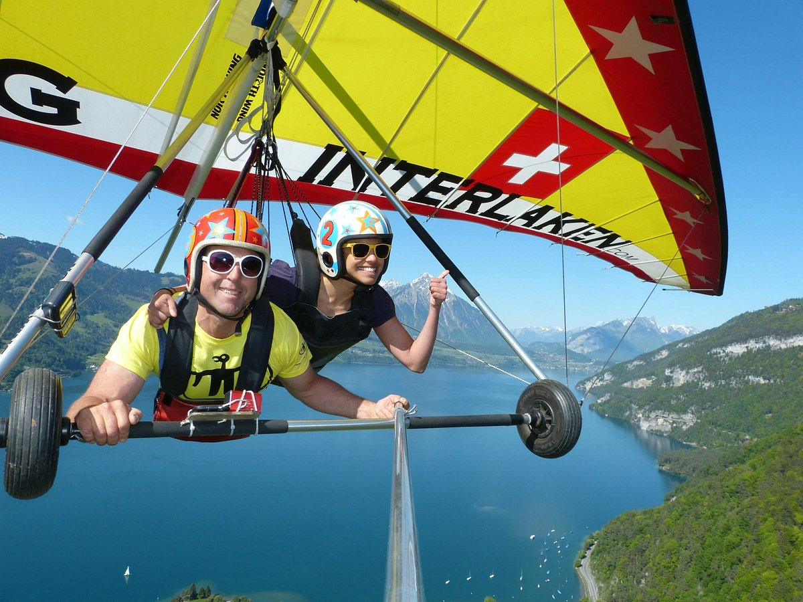
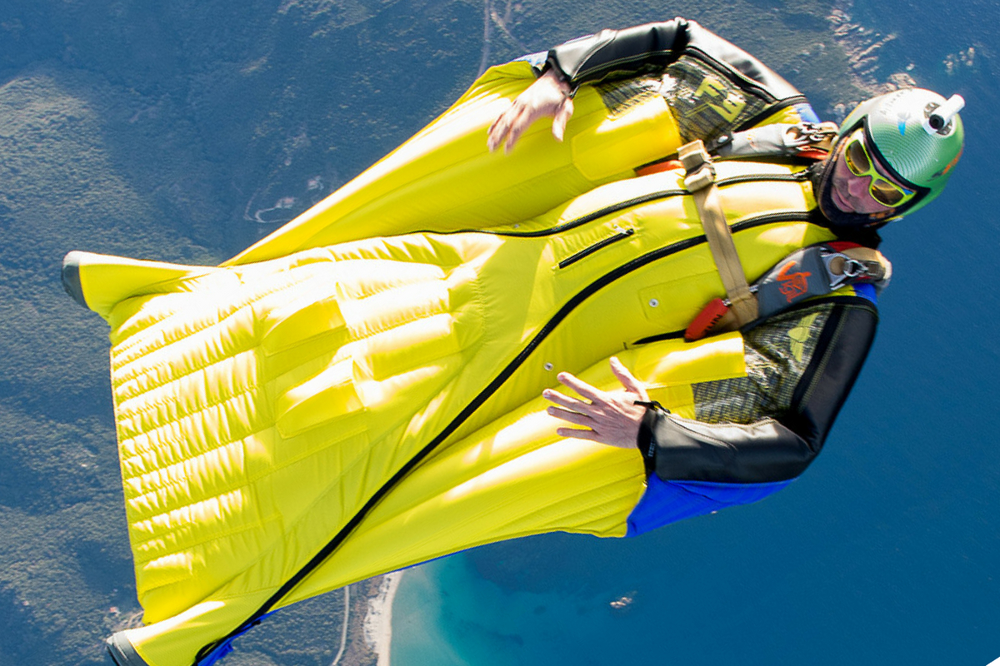

Parachutes
Here at Harry and Harriet's, we offer the best quality parachutes available. Our parachutes are made of special Ripstop Nylon material that is made to be
elastic while giving the parachute a long life. Additionally, our parachutes are made to be rounded so that they open more efficiently and smoothly while also
consuming less altitude as you descend. For inexperienced users, we recommend that you follow this guide: Parachute Guide
Hang Gliders

Here at Harry and Harriet's, we offer the best quality hang gliders available. We have experts you can meet with in store to discuss which hang glider is right
for you. For online shoppers, here are some factors that will affect which hang glider you will want to buy:
- Experience:
Users with less experience tend to prefer gliders with more bar pressure and truncated tips because they are easier to control.
- Weight:
Your weight and strength heavily affect both your ability to control the hang glider as well as the speed at which you travel.
- Flying Location:
Depending on your location and goals, you may wish to have a stable glider or a glider that can maneuver exceptionally well.
For more information, visit Choosing a Glider, or come into the store to
speak with a professional.
Wing Suits

Here at Harry and Harriet's, we offer the best quality wing suits available. What is special about our wing suits is that we custom make them for each user. In
order to get your custom wing suit, here is the process:
- Schedule an Appointment
- Get fitted for your size
- Take our free wing suit demonstration course (optional but recommended)
We would also recommend that you download and read our Wing Suit Training Manual.
Please do not hesitate to reach out to pakrivac@purdue.edu with any questions or concerns.
The document was last modified on : Tue Mar 19 2024 18:50:35 GMT-0400 (Eastern Daylight Time)